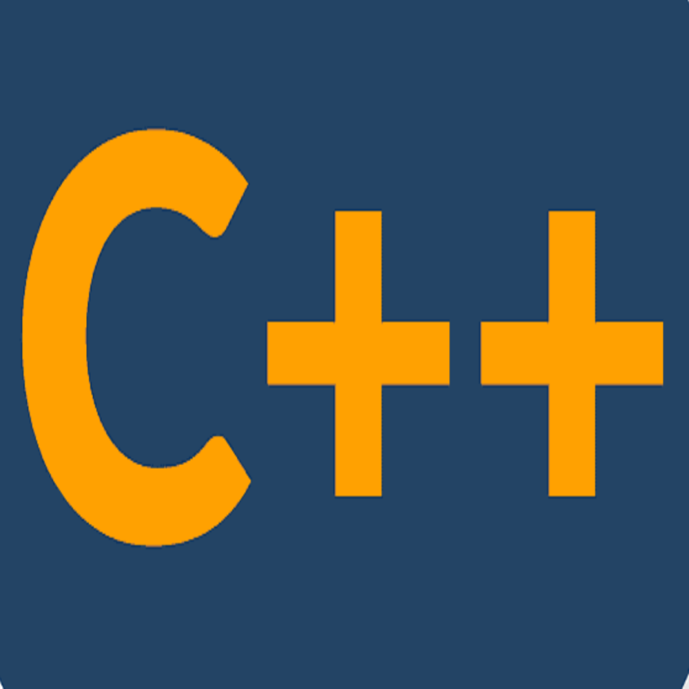
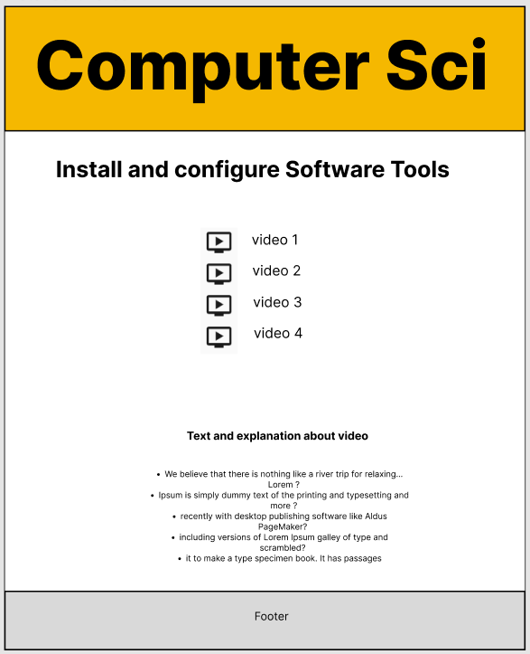

Overview
Purpose
The Purpose of our website is to convenience those students who are looking for educational content especially the educational videos related to programming. There are many online resources that have their own target curricula and audience. Most of them align with small number of specific topics within the coursework in science, technology, and engineering at the Miramar College. therefore, the goal of this Website will be to enhance online curriculum at Miramar College. Our goal is to increase efficiency and reducing confusion experienced by many online students in computer Sci major. Restructuring the science, technology, and engineering curricula around 3rd party programs would not be practical for or controllable by the experienced staff. This method would be severely limited in scope. So we are planing to create this website to produce tutorial videos that are simple to digest and practical to implement. We are trying our videos be simple and beginner friendly.
Audience
Our target audience will be Miramar college students majored in Computer Sci.
Style Guide
Color Palette
Palette URL: https://coolors.co/f5b800-f1de97-e9d5bd-faecf6| Primary | Secondary | Accent 1 | Accent 2 |
|---|---|---|---|
| [#F5B800] | [#FAECF6] | [#F1DE97] | [#E9D5BD] |
Typography
Heading Font: Bookman
It's a web safe font which is ideal for headings. Bookman (or Bookman Old Style) is a great option as a heading font that maintains legibility (or readability) even when used in a small size. It's the serif font
Paragraph Font: Arial
It's web safe font and it's sans serif which are in contrast with headng font. It' readable and clear and it’s one of the most widely used sans-serif fonts. It’s often substituted on Windows devices for other interesting (read: more beautiful) font choices.
Normal paragraph example
Restructuring the science, technology, and engineering curricula around 3rd party programs would not be practical for or controllable by the experienced staff. This method would be severely limited in scope. So we are planing to create this website to produce tutorial videos that are simple to digest and practical to implement. We are trying our videos be simple and beginner friendly.
Colored paragraph example
Restructuring the science, technology, and engineering curricula around 3rd party programs would not be practical for or controllable by the experienced staff. This method would be severely limited in scope. So we are planing to create this website to produce tutorial videos that are simple to digest and practical to implement. We are trying our videos be simple and beginner friendly.
Navigation
Site Map
Content
Home page
In this page we have options for students to choose among three programming language to learn. While they can click on three links if they have problem with setting development environment, or installing needed softwares for considered programming language, as well as the the extra resources and links if students want to dive deep on the topic.
Our home page has three main headlines:
Python
Java
C++
We are explaining the reason that students want to visit our website and learn or get what they expect from an educational website.
The images for the Home page
-

-

- 
Pages for Different Programming Language
In this page, we will use the Logo of each language or we have to design or bue some photo just give an visual effect to the page. In this page students can navigate among videos and texts to learn about target programming language.
Forum
These page will be created when our website is online and we have online storage that we can save our data. In this level, students need to log in to their account and participate in the forum by asking questions and answering the questions.
Wireframes
Create three wireframes for your site. One for each page and list them here
Home
This is our Home wire frame and our homw page will be designed based on it
Pages
This is our Products wire frame and our product page will be designed based on it
Course's Video Pages
These are our Course's Video Pages wire frame and our Course's Video Pages page will be designed based on it.
Other Pages for Setting Up the Development Area
These are our Setting Up the Development Area Pages wire frame and our Setting Up the Development Area page will be designed based on it.
